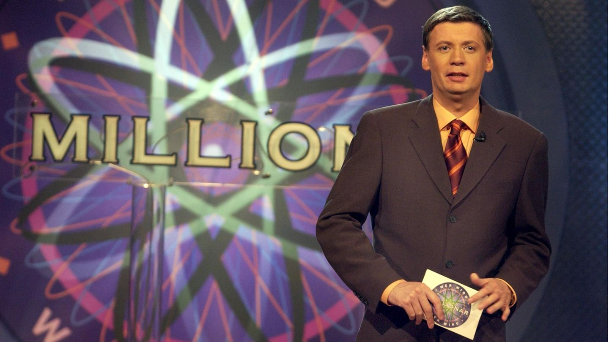
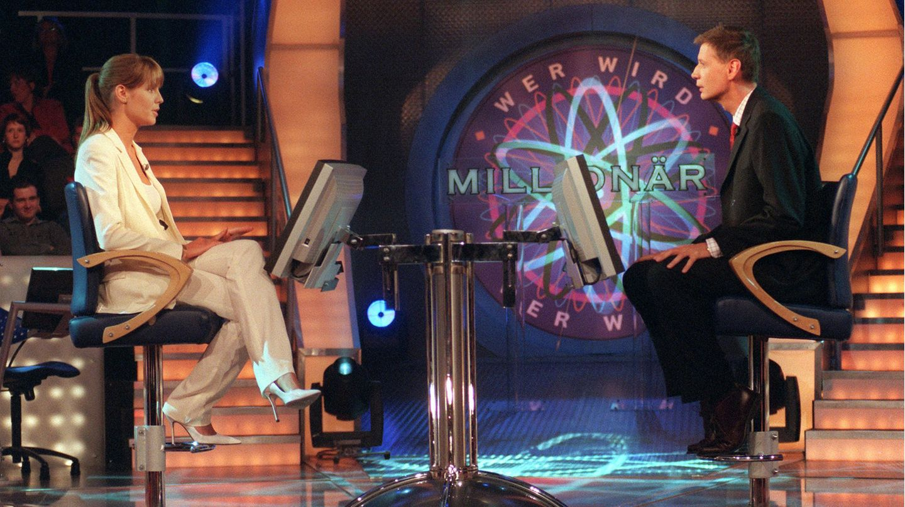
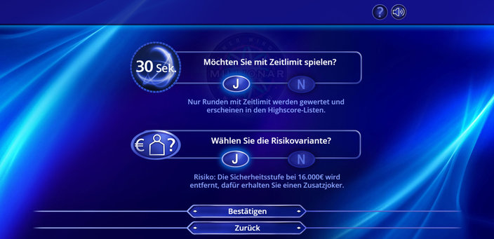

Die Geschichte

„Wer wird Millionär?“ wurde ursprünglich 1998 in Großbritannien unter dem Namen „Who Wants to Be a Millionaire?“ entwickelt. Das innovative Konzept, ein Quizformat mit Spannung, Strategie und Unterhaltung zu verbinden, wurde schnell zu einem globalen Phänomen. In Deutschland feierte die Sendung am 3. September 1999 auf RTL ihre Premiere. Moderiert von Günther Jauch, der seither das Gesicht der deutschen Version ist, setzte die Show von Beginn an neue Maßstäbe im deutschen Fernsehen.

In der deutschen Version von „Wer wird Millionär?“ müssen die Kandidat:innen 15 Multiple-Choice-Fragen beantworten, die mit jeder Stufe schwieriger werden. Der Hauptgewinn beträgt 1 Million Euro. Zur Unterstützung stehen drei Joker zur Verfügung: der 50:50-Joker, der Publikumsjoker und der Telefonjoker. Bei der Risikovariante, die vor dem Spiel gewählt werden kann, erhalten die Kandidat:innen einen zusätzlichen Joker, den Zusatzjoker, mit dem sie eine Person aus dem Publikum um Hilfe bitten können. Diese Entscheidung ist jedoch endgültig und sorgt für zusätzliche Spannung.

Der Erfolg in Großbritannien führte dazu, dass das Format in über 100 Ländern lizenziert und angepasst wurde. In Deutschland startete die Show am 3. September 1999 auf RTL unter dem Titel "Wer wird Millionär?", moderiert von Günther Jauch, der bis heute das Gesicht der Sendung ist. Jauch begeistert die Zuschauer mit seinem charmanten und humorvollen Moderationsstil, der die Show zu einem festen Bestandteil der deutschen Fernsehlandschaft gemacht hat.

Die deutsche Version unterscheidet sich in einigen Punkten von der britischen Version. So gibt es in Deutschland eine Risikovariante, bei der Kandidaten selbst entscheiden können, ob sie eine zusätzliche Sicherheitsstufe nutzen möchten. Regelmäßig finden auch Prominentenspecials statt, bei denen Stars für wohltätige Zwecke spielen.

In Deutschland blieb der erste Millionengewinn von Eckhard Freise im Jahr 2000 unvergessen. Auch Kandidaten wie Ralf Schnoor und Leon Windscheid schrieben Geschichte mit ihrem Wissen. Die Prominentenspecials sorgten für Highlights, etwa mit Oliver Pocher oder Barbara Schöneberger. Besonders spannend waren riskante Entscheidungen bei der Millionenfrage oder lustige Patzer bei einfachen Fragen, die die Zuschauer zum Schmunzeln brachten.

"Wer wird Millionär?" bleibt bis heute ein Publikumsliebling. Die Mischung aus Wissen, Strategie und Nervenkitzel sowie der sympathische Umgang des Moderators mit den Kandidaten machen die Show zu einem echten Klassiker, der auch nach über 20 Jahren faszinierend ist.